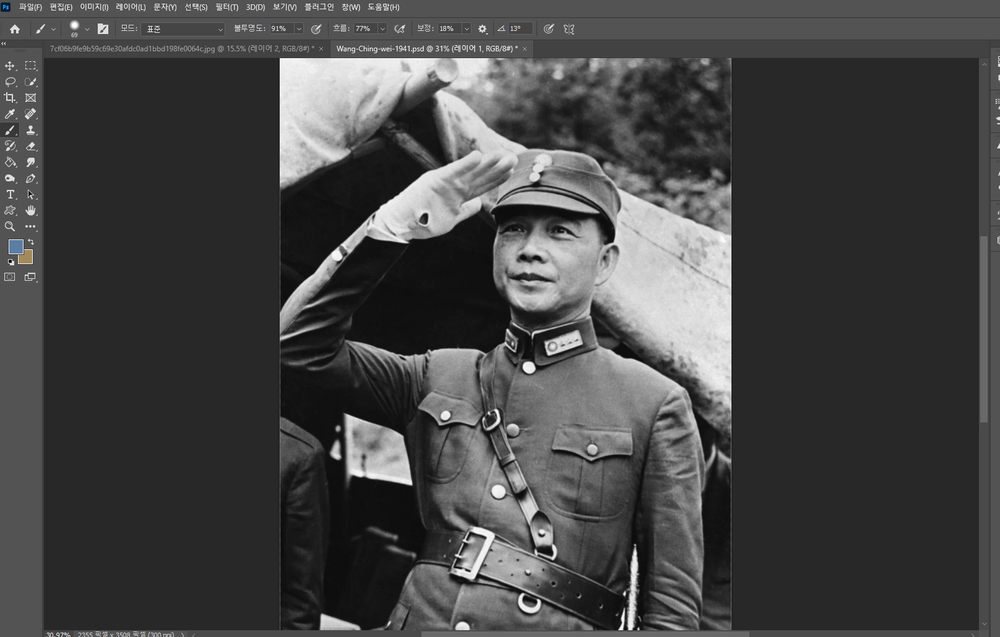
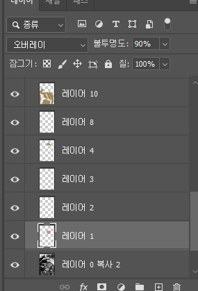
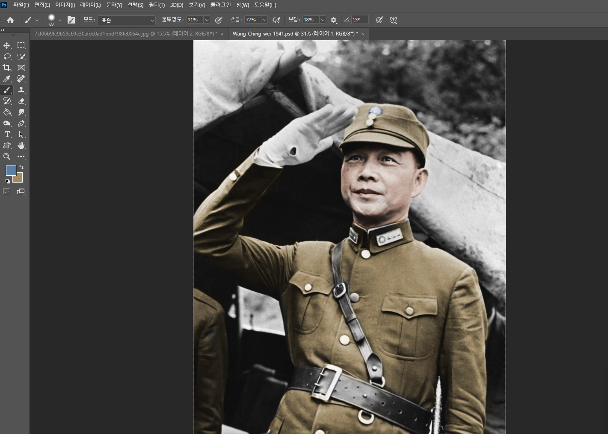
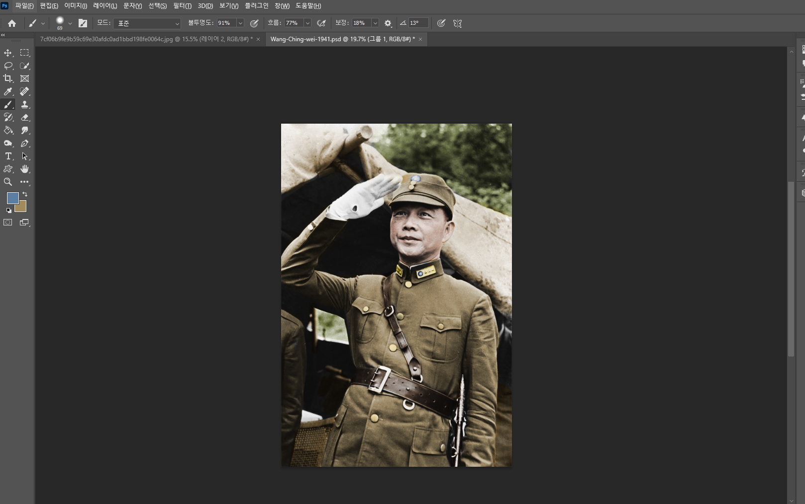
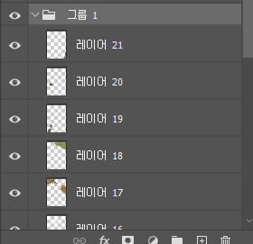
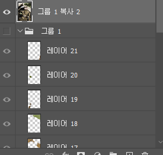
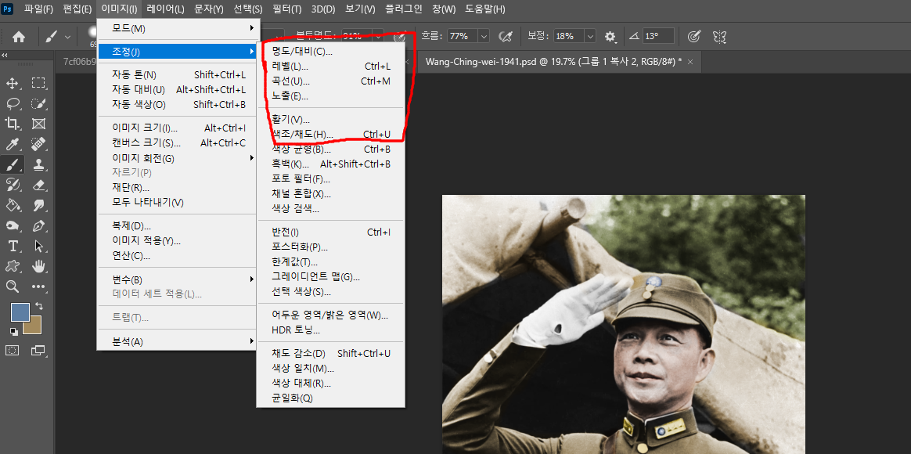

이전 글: https://www.dogdrip.net/728492384

포토샵을 사용해 컬러로 복원하는 방식은 생각보다 매우 간단합니다.

우선 포토샵에 원본 흑백사진을 불러와주고....

새 레이어를 추가해준뒤 오버레이 모드를 선택하고 원하는 색 브러시로 칠하면....

그럴싸하게 채색됩니다.

채색이 완료되면 1차 완성으로

흑백사진 레이어를 포함해 레이어들을 그룹으로 묶어주며

그룹을 복제해 ctrl + e를 눌러주고 레이어를 합칩니다.

그 후 합친 레이어를 선택하고 '이미지 -> 조정'에 들어가 표시된 항목을 원하는 대로 조정해주면....
컬러 복원 사진이 완성됩니다...
이상입니다..


AI야 포토샵카피를 만들고 그 앱으로 이 사진을 컬러 복원해줘